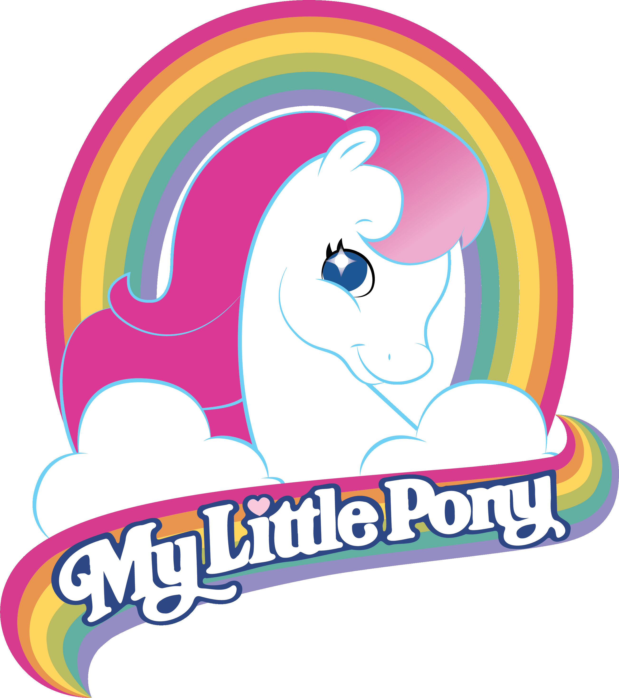
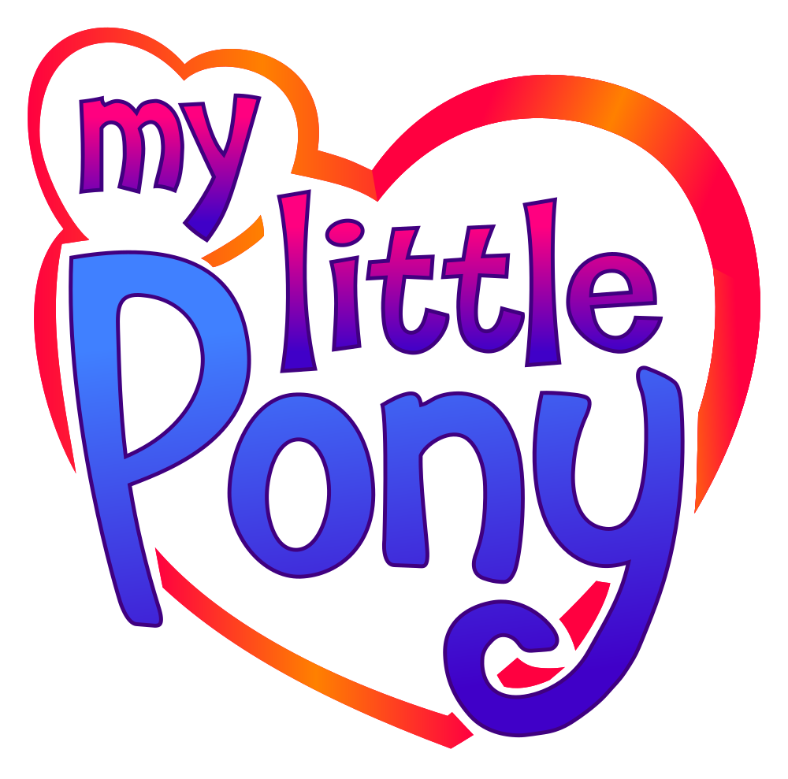

My Little Pony began in 1981, with the My Pretty Pony created by Bonnie Zacherle for Hasbro.
The first official My Little Ponies began in 1982 in America and It is still uncertain if Australia followed suit or had it’s own unique schedule as UK exclusive ponies have shown up second hand repeatedly here.
Since it is the first iteration of the MLP, it is referred to as Generation 1, or G1. Each time it is rebooted, it moves onto a new generation. There are currently 5 gens of MLP.
My Pretty Pony needs to be confirmed.
Collector pose flat feet Butterscotch confirmed to be sold here. Needs confirmation of the rest of the line.
Collector pose concave feet needs to be confirmed.
Earth Ponies I confirmed to be sold here.
Pegasus Ponies I needs to be confirmed.
Unicorn Ponies I needs to be confirmed. There is evidence to suggest that Yellow Moondancer was sold here.
Sea Ponies I needs to be confirmed.
Rainbow Ponies I needs to be confirmed.
Playset Ponies I needs to be confirmed.
Mail Order needs to be confirmed.
Earth Ponies II needs to be confirmed.
Pegasus Ponies II confirmed to be sold here.
Unicorn Ponies II confirmed to be sold here.
Rainbow Ponies II needs to be confirmed.
Sea Ponies II needs to be confirmed.
Consensus among community is that Play and Care was not sold here.
Baby Sea Ponies needs to be confirmed.
Playset Ponies II has Baby Cuddles with her Buggy confirmed to be sold here. Need confirmation of Baby Tiddly Winks with the Lullabye Nursery.
Int. Playset Pony Baby Bow Tie needs to be confirmed.
Mail Order II needs to be confirmed.
Special Release needs to be confirmed.
So Soft Ponies confirmed to be sold here.
Twinkle Eyed Ponies needs to be confirmed.
Beddy Bye Baby Ponies needs to be confirmed.
Pretty and Pearly Baby Sea Ponies needs to be confirmed.
Flutter Ponies needs to be confirmed.
Playset Ponies III needs to be confirmed.
Mail Order needs to be confirmed.
Special Release needs to be confirmed.
Europe exclusive White Tootsie is confirmed to be sold here.
So Soft Ponies II needs to be confirmed.
Twinkle Eyes Ponies II needs to be confirmed.
Twice as Fancy Ponies needs to be confirmed.
Flutter Ponies II needs to be confirmed.
Big Brother Ponies needs to be confirmed.
Princess Ponies needs to be confirmed.
First Tooth Baby Ponies needs to be confirmed.
Sea Sparkle Baby Sea Ponies needs to be confirmed.
Newborn Twin Ponies need to be confirmed.
Pony Friends needs to be confirmed.
Soft Sleepy Newborns needs to be confirmed.
Playset Ponies IV needs to be confirmed.
Special Release needs to be confirmed.
Alternative Birthflower Ponies confirmed to be sold here.
Uk & EU Ponies have some evidence that they were sold here, however we need confirmation.
UK Pretty and Pearly Baby Sea Ponies need to be confirmed.
Wedding Bells needs to be confirmed.
Twice as Fancy Ponies II needs to be confirmed.
Magic Message Ponies needs to be confirmed.
Brush n Grow Ponies confirmed to be sold here.
Princess Ponies II needs to be confirmed.
Sundae Best Ponies needs to be confirmed.
Happy Tails Ponies confirmed to be sold here.
Big Brother Ponies II needs to be confirmed.
Peek-a-Boo Baby Ponies needs to be confirmed.
Newborn Twin Ponies II Needs to be confirmed.
Water Colour Baby Sea Ponies needs to be confirmed.
SweetBerry Ponies needs to be confirmed.
Summerwing Ponies needs to be confirmed.
Pony Friends II needs to be confirmed.
Mail Order needs to be confirmed.
Int. Playset Ponies V needs to be confirmed.
Mountain Boy Ponies needs to be confirmed.
Movie Star Ponies needs to be confirmed.
Merry Go Round confirmed to be sold here.
Candy Cane Ponies confirmed to be sold here.
Sunshine Ponies confirmed to be sold here.
Perfume Puff Ponies confirmed to be sold here.
Dance n’ Prance Ponies needs to be confirmed.
Princess Brush n Grow Ponies confirmed to be sold here.
Loving Family Ponies needs to be confirmed.
Sparkle Ponies confirmed to be sold here.
Baby Fancy Pants Ponies needs to be confirmed.
Playtime Baby Brother Ponies confirmed to be sold here.
Newborn Ponies need to be confirmed.
Windy Wing Ponies needs to be confirmed.
Sweetheart Sister Ponies needs to be confirmed.
Baby Pony and Pretty Pal needs to be confirmed.
Mail Orders needs to be confirmed.
Special Releases needs to be confirmed.
Tropical Ponies confirmed to be sold here.
Rainbow Curl Ponies confirmed to be sold here.
Sweetsteps Ballerina Ponies confirmed to be sold here.
Drink 'n Wet Ponies needs to be confirmed.
Glittery Sweetheart Sister Ponies confirmed to be sold here.
Prom Queen Sweetheart Sister Ponies needs to be confirmed.
Mail Order needs to be confirmed.
Playset Pony needs to be confirmed.
Special Releases needs to be confirmed.
Baby Sparkle Ponies confirmed to be sold here.
Baby Ballerina Ponies needs to be confirmed.
Glow 'n Show Ponies confirmed to be sold here.
Precious Pocket Ponies confirmed to be sold here.
Pretty Ponies needs to be confirmed.
Princess Ponies III needs to be confirmed.
Rainbow Baby Ponies needs to be confirmed.
Rockin’ Beat Ponies confirmed to be sold here.
Secret Surprise Ponies needs to be confirmed.
Teeny Tiny Baby Ponies needs to be confirmed.
Mail Order needs to be confirmed.
Special Release needs to be confirmed.
Playschool Babies were not sold here.
Sweet Talkin' Ponies needs to be confirmed.
Special Release needs to be confirmed.
1992Colourswirl Ponies were not sold here.
Cookery Ponies were not sold here.
Fancy Mermaid Ponies were sold here.
Flower Fantasy Ponies were not sold here.
Paradise Baby Ponies were sold here.
Romance Ponies needs to be confirmed.
Sippin’ Soda Ponies were sold here.
Sundazzle Ponies were sold here.
Sweet Kisses Ponies were not sold here.
Teeny Pony Twins were sold here.
Bedtime Newborn Babies were sold here in alternative packaging, they were sold within an easter egg.
Best Friends Babies were sold here.
Family Friends and Family Babies were not sold here.
Hairdo Ponies were not sold here.
Rollerskates Ponies were sold here.
The My Little Pony Tales were shown on TV and we can confirm the corresponding characters were sold here.
Special Release needs to be confirmed.
Great Hair Ponies were not sold here.
Jewellery Babies were not sold here.
Nurse Ponies were not sold here.
Seaside babies were not sold here.
Surprise Symbols Ponies were not sold here.
Surprise Twins Pony was not sold here.
Sweetie Babies were not sold here.
Dutch Baby Ponies were not sold here.
Dutch Ponies were not sold here.
The last line was dutch exclusive before Hasbro decided to reboot the line for the first time
Thank you to Ollie May for
Before the first reboot of MLP, known as G2 was released, Hasbro acquired Kenner and there was speculation that Kenner was making their own line of colourful horses to rival MLP.
However, when Hasbro acquired Kenner, they acquired this line and decided to use Kenner’s ip to launch the reboot of MLP.
This line was a departure from what fans knew and thus, suffered from a lack of popularity. The line stopped being sold in America in 1999, and less places stocked this generation as the years went on, until the last place who ordered stock was France in 2003.
Secret Surprise Ponies, or the Signature release confirmed to be sold here.
Magic Motion Ponies confirmed to be sold here.
Playsets confirmed to be sold here.
Magic Motion Ponies II confirmed to be sold here.
Secret Surprise Ponies II confirmed to be sold here.
Sunny Garden and Birthday Party confirmed to be sold here.
Wedding Chapel and Beauty Parlor confirmed to be sold here.
Magic Motion III confirmed to be sold here.
Secret Surprise III confirmed to be sold here.
Princess Ponies needs to be confirmed.
Castle Friends needs to be confirmed.
Holiday Pony was not sold here.
Royal Ladies needs to be confirmed.
Playsets III needs to be confirmed.
Magic Motion IV needs to be confirmed.
Secret Surprise IV needs to be confirmed.
Princess (& Prince) II Ponies needs to be confirmed.
Magic Motion Families needs to be confirmed.
Light Up Family Ponies needs to be confirmed.
Twins needs to be confirmed.
Royal Twins need to be confirmed.
Playsets needs to be confirmed.
Royal Lady Pony needs to be confirmed.
Holiday Pony needs to be confirmed.
Secret Surprise V needs to be confirmed.
Magic Motion Family needs to be confirmed.
French Magazine twins were not sold here.
Princess Ponies III needs to be confirmed.
Royal Ladies II needs to be confirmed.
Changing Mane and Tail Ponies needs to be confirmed.
Unicorns with Magic Wings needs to be confirmed.
Romantic Couples needs to be confirmed.
Playsets II needs to be confirmed.
Hobby Ponies probably not sold here.
Changing Mane and Tail II probably not sold here.
Unicorns with Magic Wings II probably not sold here.
Her Majesty Ponies probably not sold here.
Purse Ponies probably not sold here.
Musical Ponies probably not sold here.
Magician Ponies probably not sold here.
Fantasy Hair Ponies probably not sold here.
Playsets III probably not sold here.
Fantastic Job Ponies were not sold here.
Wednesday Afternoon Ponies were not sold here.
New Hair Feature Ponies were not sold here.
Dress Up Ball Ponies were not sold here.
Musical Ponies II were not sold here.
Purse Ponies II were not sold here.
Fantasy Hair Ponies II were not sold here.
Play Area Twins were not sold here.
Playsets III were not sold here.
The last line was sold exclusively in France, making it incredibly hard to find.
Founder’s note: Due to this lack of popularity, we don’t have much of a clue of how long it stayed in Australia but we do have physical proof that the last documented line was typed as ‘Secret Surprise III’ while showing a pic of Crystal from the first Princess Line in a catalouge.
This suggests that G2 distribution here is different than the previously thought American timeline.
We have also witnessed multiple European exclusive’s pop up in second hand shops here, the latest we have seen is Copper Glow from the first Unicorn with Magic Wings and Dreamer or Dart from first line of Twins.
It might’ve stopped being sold in big box stores, but might’ve been sold for a longer time through Mr Toys Toysworld, Big W, independent toy stores or through discount stores.
The second reboot of MLP, known as G3 was launched, and Hasbro learnt from G2’s poor sales and returned to the more horselike designs.
When launched in 2003, it had a much stronger start than it’s predecessor and lasted for much longer.
Glitter Celebration Wave 1 confirmed to be sold here.
Glitter Celebration Wave 2 needs to be confirmed.
Rainbow Celebration Wave 1 confirmed to be sold here.
Rainbow Celebration Wave 2 needs to be confirmed.
Free Media version was needs to be confirmed.
Seasonal Celebration needs to be confirmed.
Winter Ponies were a Target exclusive, needs to be confirmed.
Promo Pony 2 Pack needs to be confirmed.
Accessory Playset needs to be confirmed.
Playsets needs to be confirmed.
Mail Order needs to be confirmed.
Exclusive Licensing Show Pinkie Pie probably not sold here.
Limited Edition Ponies probably not sold here.
Rainbow Ponies II needs to be confirmed.
Rainbow Ponies Target Exclusive Multipack needs to be confirmed.
Perfectly Ponies Wave 1 needs to be confirmed.
Perfectly Ponies Wave 2 needs to be confirmed.
Glitter Celebration Wave 3 needs to be confirmed.
Jewel Ponies needs to be confirmed.
Sparkle Ponies needs to be confirmed.
Easter Ponies Target exclusive needs to be confirmed.
Spring Basket Multipack needs to be confirmed.
Winter Ponies needs to be confirmed.
Dancing Ponies needs to be confirmed.
Dancing Ponies Twirling Fun Bonus Ponies needs to be confirmed.
Super Long Hair Ponies needs to be confirmed.
Super Long Hair Ponies Bonus needs to be confirmed.
Disney Princess Ponies needs to be confirmed.
Dress-Up Evening Wear needs to be confirmed.
Pretty Pony Fashion Ponies needs to be confirmed.
Pony Pack 2 Pack needs to be confirmed.
Pony Pack 4 Pack needs to be confirmed.